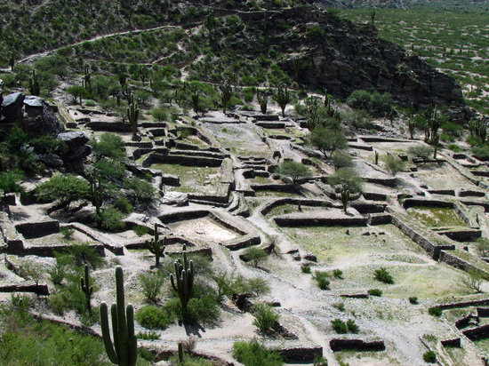
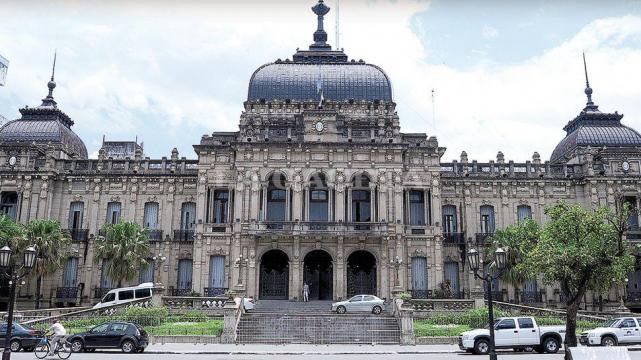
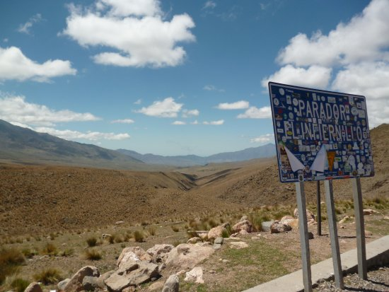
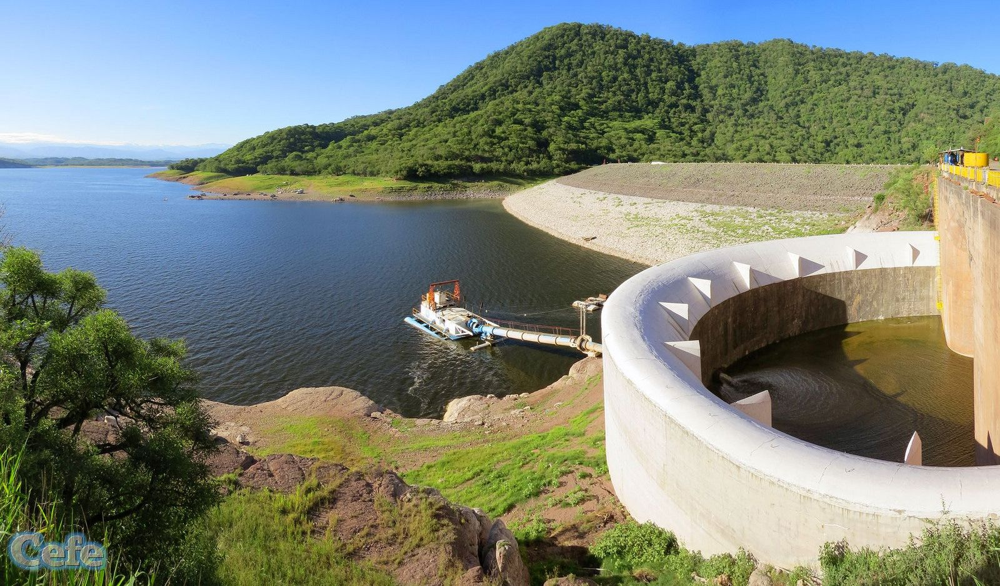

Superficie: 22.524 Km2
Población: 1.448.200 habitantes (Censo 2010).
Capital Provincial: San Miguel de Tucumán - 794.327 habitantes (censo 2010).
Principales Ciudades: San Miguel de Tucumán, Banda del Río Salí, Tafí Viejo , Aguilares, Concepción, Monteros, Simoca, El Siambón, San Javier, San Pedro de Colalao, Yerba Buena, Tafí del Valle.
La provincia de Tucumán se encuentra ubicada en el noroeste de la República Argentina, con una superficie de 22.524 Km2 y una población de aproximadamente 1.300.000 habitantes. Su ciudad capital es San Miguel de Tucumán (550.000 habitantes), fundada en 1565.
Limita al norte con la provincia de Salta; al este con la provincia de Santiago del Estero; al sur y al oeste con la provincia de Catamarca.
A pesar de su escasa extensión, la conjunción de factores determinados por su posición geográfica y su relieve muy contrastante, hace que dentro de su territorio se amalgamen paisajes muy diversos, que abarcan desde las planicies pobladas por monte espinoso hasta las selvas de la ladera y desde vastas extensiones llanas hasta cumbres nevadas. Su relieve presenta dos regiones bien diferenciadas: llanuras en el este y montañas al oeste.
La primera constituye la extremidad occidental del Gran Chaco, en tanto que las formaciones orográficas del oeste tucumano son un tanto heterogéneas. El norte, por ejemplo, está dominado por las sierras subandinas, mientras que una ancha franja recostada al occidente pertenece a las sierras pampeanas. Los cordones montañosos que erizan la provincia están separados por bolsones y valles.
Sobernas indiscutidas del paisaje tucumano son las Cumbres Calchaquíes, que orlan el sector meridional de la Puna, y las sierras del Aconquija, a la que pertenecen las mayores elevaciones de la provincia, como el Nevado del Candado, de 5.450 m, y el cerro del Bolsón, de 5.550 m de altura.
Cálido subtropical con estación seca en invierno.
Durante los meses de octubre a marzo predominan las lluvias que sobrepasan los 1.000 mm anuales. El promedio de temperatura máxima anual es de 25°, con una mínima de 13°.
La provincia tiene diversos microclimas debido a la variación de la altura de su relieve.